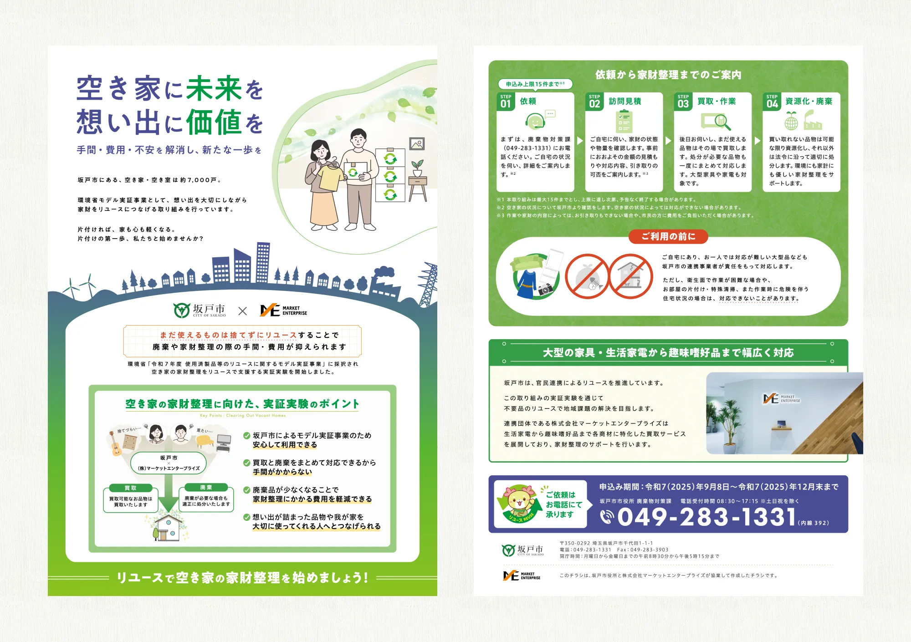
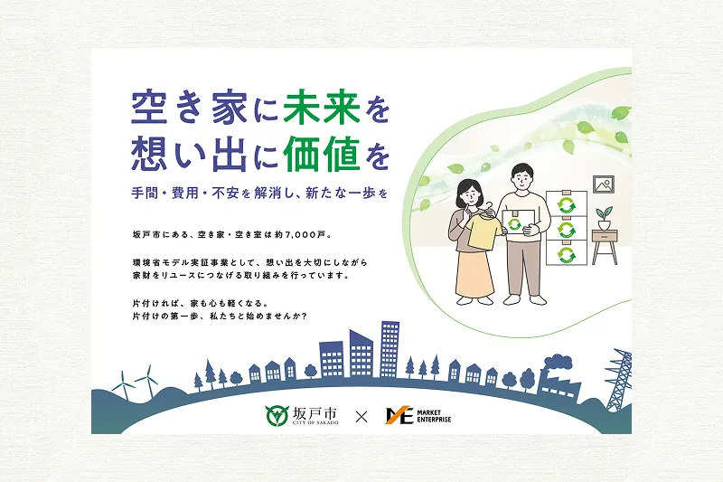
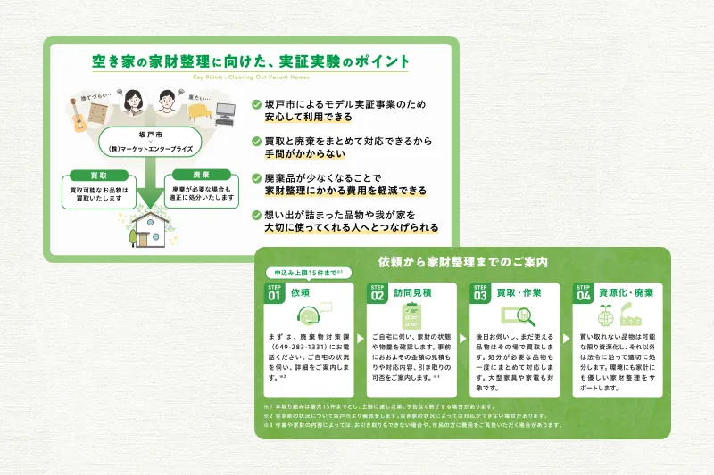

坂戸市 リユース促進実証事業 募集チラシ
リユースの意識を変える
リユースの意識を変える
広報デザイン
PROBLEM / 課題
坂戸市では空き家率が全国平均を上回る中、「リユース業者」と「廃棄業者」を市民が個別に探して手配する煩雑さが、片付けを停滞させる大きな壁となっていました。ポスティングという一瞬の接点で、いかに「怪しい業者ではないか」という不安を払い、放置された空き家の整理という重い腰を上げさせるかが課題でした。
SOLUTION / 解決
15件の問い合わせ獲得を目標に掲げ、公共事業としての信頼感を軸としたデザイン戦略を展開しました。複雑だった依頼フローを一本のシンプルな導線へと整理し、窓口集約による利便性と、リユースによる費用軽減のメリットをセットで訴求。その結果、市民が抱える心理的・物理的なハードルを下げ、無事に目標の15件を達成することができました。
DESIGN CONCEPT
行政の信頼感と、身近なサービスの使いやすさ
市役所の案内としてスッと馴染むよう、彩度を抑えた上品なグリーンを基調にまとめました。行政事業としての「誠実さ」と、サービスとしての「親しみやすさ」をバランスよく両立させることで、大切な家財を安心して託せるトーン＆マナーを追求しています。表面で得た共感を、裏面の具体的な手順や信頼情報へとシームレスに繋げる構成にこだわりました。

迷いと不安をゼロにする視覚的配慮
主なターゲットである高齢層に配慮し、可視性の高いフォントと適度な余白を活用した、読みやすさを最優先した設計です。文字量を絞り込み、情報の優先順位を明確にすることで、視線が迷わず問い合わせ先へ辿り着けるレイアウトを徹底しました。重いテーマになりがちな片付けを、ポジティブな一歩へと変える直感的なUXデザインを紙面上に実現しています。
